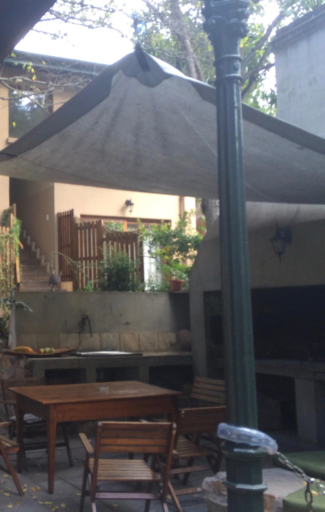
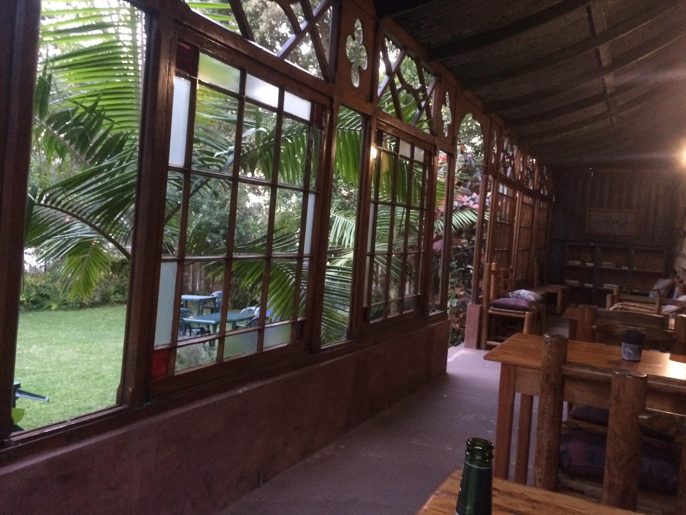

Tag 14 – Aufbruch in neue Welten
By Evita Bley
Ich habe ein paar Tage keinen Eintrag geschrieben, das hat der ein oder andere von euch sicher bemerkt. Das lag nicht daran, dass ich keine Lust hatte etwas aufzuschreiben, sondern daran, dass wir auf unseren 3-Tage-Ausflug aufgebrochen sind. Auf diesen Ausflug wollte ich nicht unbedingt meinen Rechner mitnehmen und so hatten wir nur Telefone und darauf mag ich keinen längeren Post schreiben. Also gibt es jetzt ein paar Einträge hintereinander in kurzen Abständen, die nachholen was wir erlebt haben. Und das war Einiges. Viel Spaß!
Montagmorgen, heute wird früh aufgestanden, schließlich haben wir einige Kilometer abzureißen. Um genau zu sein wollen wir nach Mossel Bay. Jeanine hat für uns dort im Hostel, was ich im Internet gefunden habe, zwei Betten gebucht für die nächsten zwei Nächte. Mossel Bay liegt ca. 350 Kilometer entfernt von uns hier in Somerset West. Wir fahren mit dem Auto. Also das heißt ich fahre das Auto und Martin muss die ganze Fahrt Fotos machen und navigieren (also vorlesen was auf dem Navigerät angezeigt wird). Das macht er auch alles hervorragend, allerdings muss ich im Anschluss alle 2000 Bilder sichten und auswählen … na das wird ein Spaß :D
Wir fahren auf dem Hinweg immer die N2 lang, quasi die Autobahn, von der ich ja auch schon in anderen Einträgen sprach. Am Anfang ist es noch ein bisschen neblig und dicke Wolken hängen direkt über uns. Aber schon bald klart der Himmel auf und den Rest der Strecke haben wir herrliches Ausflugswetter. Bis Swellendam ist es wirklich eine schöne Strecke, schön kurvig, ein paar kleine Berge und recht beschaulich. Ab Swellendam geht es im Grunde immer geradeaus, 200 Kilometer immer hoch und runter, aber geradeaus, das ist auf Dauer doch etwas ermüdend, aber Gegend ist trotzdem unglaublich viel da.
In Mossel Bay finden wir direkt unser Hostel und entscheiden uns, dass es doch gut wäre am Meer irgendwo noch eine Kleinigkeit zu essen und zu trinken. Also machen wir uns zu Fuß auf und gehen einfach 10 Minute die Straße runter und sind schon direkt am Hafen. Dort gibt es das „Seagypsy“ und man sitzt direkt am Meer, ach ist das herrlich. Die Möwen sitzen neben einem auf der Mauer und man isst seinen Toast und trinkt sein Bier mit herrlichem Ausblick auf Mossel Bay und das Meer. Hier lässt es sich aushalten.
Zurück im Hostel bin ich ziemlich müde (so gegen 17). Ich entscheide mich, heute sehr früh schlafen zu gehen und das tue ich auch. Vorher schaue ich noch ein wenig um mich her und finde, dieses Hostel ist eines der niedlichsten und schönsten Hostels, die ich bis jetzt kenne. Mit einem Garten, wo die Leute mit Zelten schlafen können; einer großen Braai-Ecke, wo täglich abends auch jede Menge Leute sitzen und grillen; einem kleinen Hof zwischen den zwei Häuschen, wo man unter Palmen sitzt und ein kleiner Brunnen plätschert (und wo man Internet empfängt). Ich gehe also in unser Zimmer. Wie sich herausstellt haben wir beide Nächte ein 6-Bett-Zimmer für uns alleine! Und das für ’nen 10er die Nacht :)


Nach 2 Stunden ruhen stehe ich doch nochmal auf und sitze mit Martin noch ein wenig im Garten. Um 21 geht es wieder ins Bett und diesmal wird wirklich geschlafen. Morgen ist schließlich ein großer Tag und es gibt jede Menge zu erleben. Aber davon erzähle ich erst im nächsten Bericht.